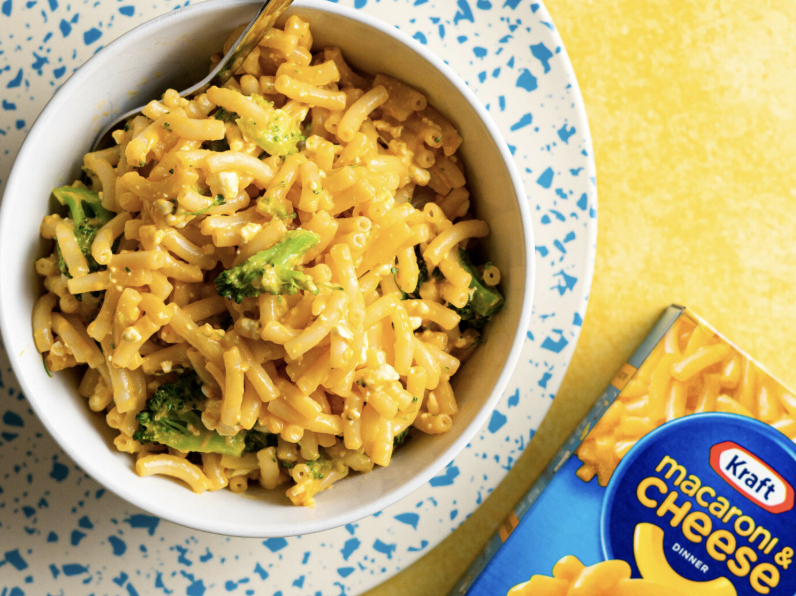

Mac & Cheese
Homepage

Description
Every child's favourite lunchtime meal that moms only allow once a month. Great just as it is but so much room for creativity.
Ingredients
- Kraft Mac and Cheese
- 2 Sausages
- 100g Mozeralla Cheese Shred
- 1 Tbsp Butter
- 1/2 Cup Milk
- 1 Tsp Onion Powder
- Salt and Pepper
Steps
- Chop your sausages into bite sized coins and add to the saucepan
- Follow the cooking instructions on the Kraft packaging to create your mac and cheese in the same saucepan
- Once your macaroni is aldente and incorporated with the packeted seasonings, add onion powder, mozerella, butter and milk to the pot
- Mix until all is well incorporated
- Enjoy while warm!